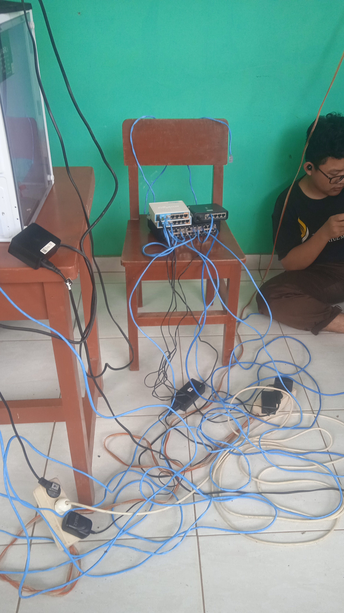
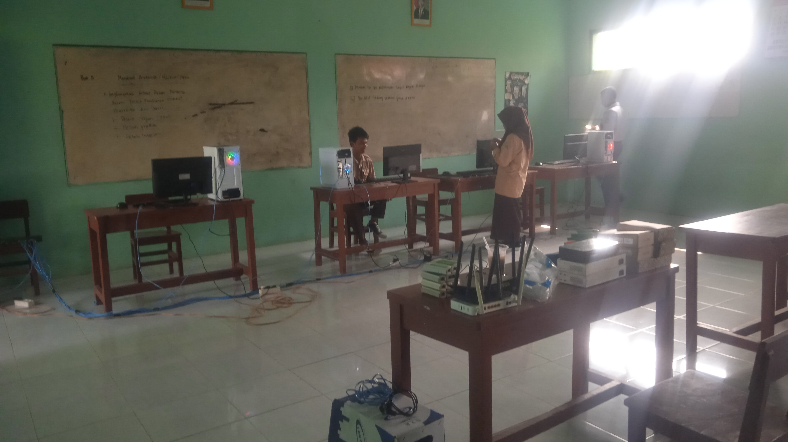

Dokumentasi Project Konfigurasi MikroTik
Berikut adalah bukti hasil ujikompetensi saya selama masa pendidikan di TKJ.

Persiapan sebelum pelaksanaan.

Perangkat yang digunakan seperti: Router, Switch dan Kabel UTP.

Pelaksanaan Project.